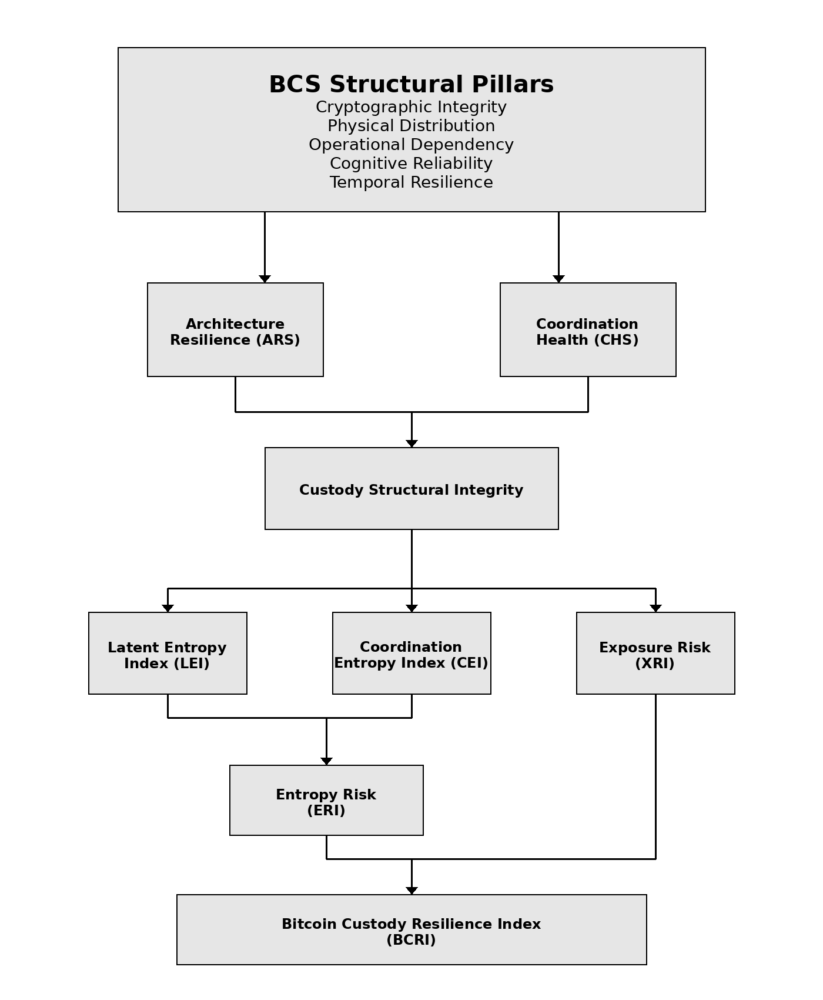

Bitcoin Custody Standard — Normative Summary
The Bitcoin Custody Standard (BCS) defines a normative framework for evaluating and strengthening the structural resilience of Bitcoin custody architectures across time.
Intended for high-value Bitcoin holders, fiduciaries, institutional allocators, and long-horizon stewards.
About the Bitcoin Custody Standard
The Bitcoin Custody Standard is a public framework for evaluating Bitcoin custody beyond point-in-time security controls. It treats custody as a system rather than a device or provider choice, and focuses on whether a custody architecture can preserve control across time, operational change, participant turnover, and adversarial conditions.
The framework is designed for long-term holders, fiduciaries, institutions, and serious operators who require a more rigorous basis for custody evaluation. Research publications and ongoing work related to the Bitcoin Custody Standard are available at BCS Research Archive.
How to Cite This Standard
Bitcoin Custody Standard Initiative.
Bitcoin Custody Standard (BCS) — Normative Summary, Version 1.1 (BCS-NS-1.1).
March 2026.
Available at: https://bitcoincustodystandard.org
Core Publications
The Bitcoin Custody Standard is published through a normative framework, benchmark reports, and supporting research.
BCS-NS-1.1 · Normative Standard
BCS-NS-1.1 — Normative Standard
Defines the public normative framework of the Bitcoin Custody Standard, including the structural basis for evaluating Bitcoin custody resilience across time.
BCS-BR-1.0 · Benchmark Report
BCS-BR-1.0 — BCRI Benchmark Report
Applies the Bitcoin Custody Standard framework across benchmark custody architectures to evaluate structural resilience and operational complexity.
Supporting Research
BCS-R — Research Archive
Ongoing research papers and analytical publications expanding the Bitcoin Custody Standard across specific custody architectures, failure modes, and operational questions.
Why Existing Custody Evaluation Fails
Most custody analysis focuses on components: hardware wallets, multisignature setups, service providers, or isolated security features. This is necessary but incomplete.
It does not adequately evaluate:
- structural failure over time
- coordination breakdown
- entropy-driven degradation
- dependency concentration
- jurisdictional constraints
- long-horizon recoverability
As a result, systems that appear secure at deployment may still fail under real-world conditions. The Bitcoin Custody Standard addresses this gap by evaluating custody as a structural system.
Framework Structure
The Bitcoin Custody Standard consists of a public normative layer, a benchmark application layer, and a supporting research layer.
Normative Layer
The BCS Normative Standard defines the public conceptual and evaluative basis of the framework.
Benchmark Layer
The BCRI Benchmark Report applies the framework across benchmark custody architectures and produces comparative structural analysis.
Research Layer
Supporting research publications extend the framework into specific custody questions, architecture studies, and applied resilience analysis.
Together, these layers define the framework, demonstrate its application, and expand its interpretive depth.
Research Publications
The Bitcoin Custody Standard is supported by an ongoing research program. These publications extend the framework through focused analysis of custody design, resilience failure modes, and long-horizon operational risk.
BCS Research Archive
Research papers, methodology notes, and analytical commentaries related to the Bitcoin Custody Standard are published at the BCS Research Archive. The archive includes working papers on custody architecture, failure mode analysis, resilience design, and benchmark methodology.
Featured Research
The Bitcoin Custody Standard is supported by an ongoing research program. These publications provide analytical extensions of the framework, including custody architecture analysis, failure modeling, and long-horizon resilience research.
BCS Research Archive
-
Start Here — The Bitcoin Custody Standard
↗

Start Here — The Bitcoin Custody Standard
A research initiative for the structural evaluation of Bitcoin custody systems.
-
The Case for a Bitcoin Standard
↗

The Case for a Bitcoin Standard
Why custody must be evaluated as a system rather than a collection of devices.
-
Custodial Entropy: The Silent Failure Mode of Bitcoin Custody
↗

Custodial Entropy: The Silent Failure Mode of Bitcoin Custody
A custody system can remain cryptographically secure while quietly becoming unrecoverable.
-
The Custodial Paradox: The Structural Trade-Off in Single-Key Bitcoin Custody
↗

The Custodial Paradox: The Structural Trade-Off in Single-Key Bitcoin Custody
A system-level analysis of four failure modes and the trade-offs that persist over time.

BCS Research
bitcoincustodystandard.substack.com
Bitcoin Custody Standard Research Archive
Research notes and commentary supporting the development of the Bitcoin Custody Standard — custody architecture, custodial entropy, and resilience analysis.
How to Use This Site
For first-time readers, the recommended sequence is:
- 1Read the Normative Standard to understand the public framework.
- 2Review the BCRI Benchmark Report to see how the framework is applied.
- 3Explore the Research Archive for deeper analysis of specific custody questions and architecture types.
The framework defines the structure. Benchmark and research publications extend its application.
Key metrics
- Bitcoin Custody Resilience Index (BCRI): Composite resilience output (0–100, higher is stronger)
- Architecture Resilience Score (ARS): Structural strength across the five BCS pillars (0–100, higher is stronger)
- Coordination Health Score (CHS): Reliability of custody coordination and procedural continuity (0–100, higher is stronger)
- Entropy Risk Index (ERI): Long-horizon structural degradation risk (0–100, lower is better)
- Exposure Risk Index (XRI): Adversarial exposure and operational visibility risk (0–100, lower is better)
ERI and XRI are the primary risk indicators used for conformance evaluation. XRI does not independently determine conformance status but contributes to the overall resilience assessment.
BCRI Structural Resilience Model

Abstract
Purpose
Governance
Stewardship
The Bitcoin Custody Standard (BCS) is stewarded by the Bitcoin Custody Standard Initiative (BCSI). Stewardship includes maintenance of normative documents, publication of supporting research, and periodic revision of the standard to ensure continued alignment with evolving custody practices, technological developments, and emerging operational risks.
Versioning
BCS follows a versioned publication model. Each document release is assigned a version identifier. Conformance claims shall reference the specific BCS version used for assessment and shall not imply applicability to future versions without reassessment.
Review Cadence
Normative documents are periodically reviewed to ensure continued relevance and accuracy as the Bitcoin custody landscape evolves. Unless otherwise specified, documents are reviewed annually. The next scheduled review of BCS-NS-1.1 is February 2027, or earlier if a major revision is required.
External Contributions
The BCS initiative welcomes constructive feedback and external contributions from researchers, practitioners, and industry participants. Contributions may include technical review, methodological suggestions, or empirical observations related to custody resilience. Feedback may be submitted to contact@bitcoincustodystandard.org.
Citable As
Bitcoin Custody Standard (2026).
BCS-NS-1.1 — Normative Standard.
BCS-BR-1.0 — BCRI Benchmark Report.